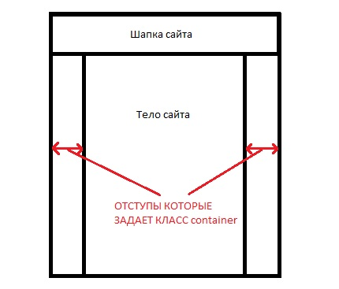
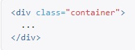
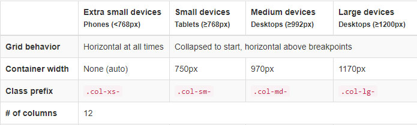
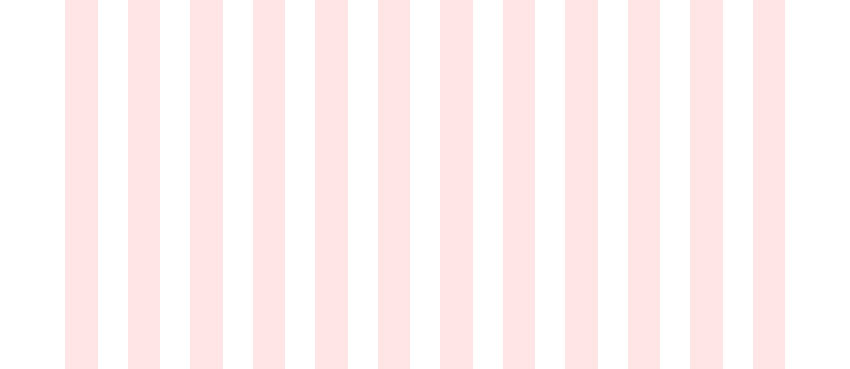

Bootstrap - это набор готовых CSS и Java Script кусочков кода, которые помогают ускорить верстку. Плюс в библиотеке bootstrap уже помещено содержание файла reset.css, этот файл обнуляет отступы всех элементов, это позволяет отображать элементы во всех браузерах одинаково.
Библиотеку Bootstrap можно скачать с официального сайта
После того как скачали архив с библиотеками, открываем его и видим внутри папки:
Из папки CSS вытаскиваем файл который называется bootstrap.css. Этот файл помещаем в папку CSS нашего проекта
Теперь в index.html в разделе head мы подключаем этот файл как обычный файл CSS. ВАЖНО - что бы этот файл в списке подключенных файлов CSS был самым первым.
Так же библиотеки bootstrap можно подключать используя CDN ссылки. Вот некоторые из них:
Библиотека CSS
Библиотека Java Script
Если нам необходимо что бы наш сайт имел по бокам одинаковые отступы по всей высоте сайта, то необходимо весь код тела сайта поместить в div с классом "container"
 Рассмотрим таблицу
Bootstrap разделяет ширину экрана на 4 вида:
Этим видам экрана соответствуют классы:
После дефиса указывается количество колонок которое должен занимать блок по ширине экрана
Любой из этих экранов делится на 12 колонок. (это максимум, больше быть не должно) Выглядит это вот так:
Как это работает? допустим у нас есть блок (Этому блоку кстати необходимо присвоить класс row). Этот блок занимает 100% от ширины экрана (соответственно он будет занимать 12 колонок). Внутри этого блока у нас есть два блока. Первый будет занимать 4 колонки, а второй оставшиеся 8. Вот как это будет выглядеть:
Таким образом мы можем группировать наши элементы сайта. Это очень удобно! Более того такой метод помогает нам адаптировать сайт под разные размеры экранов, так как мы можем добавить к нашим блокам дополнительные классы, например col-xs и указать что он будет занимать все 12 колонок, тогда как только ширина экрана станет меньше 768px, наши колонки выравнятся в столбец.